クロネの指輪 刻印
基本システム刻印強化
雑学
基本システム
クロネの指輪とは、転生システムと関わりの深い特殊な能力を秘めた指輪です。主に「希望の指輪」「記憶の指輪(1転以上)」「願いの指輪(2転以上)」「思い出の指輪(3転以上)」の4種類に分かれています。
各種類ごとに装備着用数制限が1個までですが、5次転生(4転900～)をして特定のクエストを完了することで着用制限を1つ無視できます。
各指輪は刻印レベルを上昇させることで強化できる特殊な効果を持っています。
刻印レベルを上昇させるには刻印の書を使います。
クロネの指輪は、異次元、鏡、錬成不可。
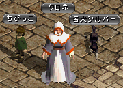
一部のクロネの指輪は、『神聖都市アウグスタ』のNPC「クロネ」（62,103）から購入可能です。
月・水・金・土・日の13～23時に特定のクロネの指輪と刻印の書を購入できます。
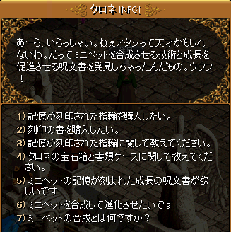
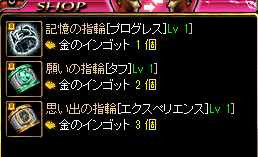
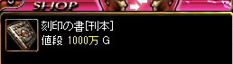
その他の指輪や刻印の書・刻印の書 は本体Lv-100以上のモンスターからドロップするクロネの宝石箱・クロネの書類ケースより出現します。
ただし、[初版本]シリーズは各種キャンペーンでのみ入手可能です。(2019.7現在はロトボックスからは出現しません。)
クロネの宝石箱・クロネの書類ケースより出現するアイテム一覧 (2018.7.11にリニューアルされました。)
刻印強化
| 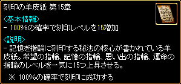 |
刻印の羊皮紙は、元の刻印Lvに関わらず一気に刻印Lvを上昇させる。 第15章は刻印Lv1～14の指輪に使用でき、刻印Lv15になる。 |
| 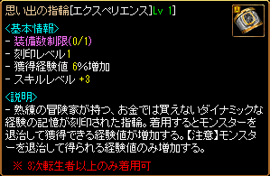 |
素材は 思い出の指輪[エクスペリエンス]Lv 1] |
| 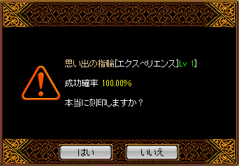 |
成功確率100％ |
| 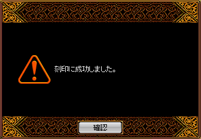 |
|
| 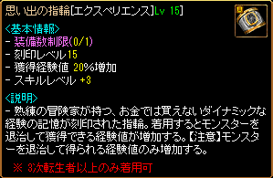 |
刻印Lv 1 ⇒ Lv 15 へ上昇 刻印Lvの上限はLv30まで。 |
| 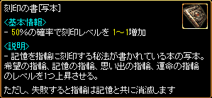 |
刻印の書は、刻印Lvを1～3上昇させる。 |
| 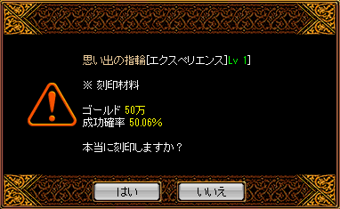 |
刻印の書の成功確率は、 運×0.0005+[40~60]％ （小数点第三位は四捨五入） 刻印の書[写本]の場合、 運×0.0005+50％ 刻印の書で刻印する場合は、 刻印Lvによってゴールドと結晶石が必要になる。 |
| 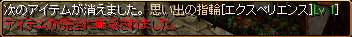 | 失敗すると完全破壊される。 |
| 刻印の書 / 羊皮紙 | ||
|---|---|---|
| アイテム | 効果 | |
| 刻印の書[刊本] | 40％の確率で 刻印レベルを1～1増加 | |
| 刻印の書[写本] | 50％の確率で 刻印レベルを1～1増加 | |
| 刻印の書[原本] | 60％の確率で 刻印レベルを1～1増加 | |
| 刻印の書DX[刊本] | 40％の確率で 刻印レベルを1～3増加 | |
| 刻印の書DX[写本] | 50％の確率で 刻印レベルを1～3増加 | |
| 刻印の書DX[原本] | 60％の確率で 刻印レベルを1～3増加 | |
| 刻印の羊皮紙 第3章 | 100％の確率で 刻印レベルを3増加 | |
| 刻印の羊皮紙 第5章 | 100％の確率で 刻印レベルを5増加 | |
| 刻印の羊皮紙 第10章 | 100％の確率で 刻印レベルを10増加 | |
| 刻印の羊皮紙 第15章 | 100％の確率で 刻印レベルを15増加 | |
| 刻印の書[初版本] |
10％の確率で
刻印レベルを1～1増加 刻印失敗時、破壊されない |
|
| 刻印の書DX[初版本] |
10％の確率で
刻印レベルを1～3増加 刻印失敗時、破壊されない |
|
| 刻印の書 刻印上昇に必要な素材 | ||
|---|---|---|
| 刻印Lv |
ゴールド | 結晶石 |
| 1 | 50万 | - |
| 2 | 100万 | |
| 3 | 150万 | |
| 4 | 200万 | |
| 5 | 250万 | |
| 6 | 300万 | |
| 7 | 400万 | 1個 |
| 8 | 500万 | |
| 9 | 600万 | |
| 10 | 700万 | |
| 11 | 800万 | |
| 12 | 900万 | |
| 13 | 1000万 | |
| 14 | 1200万 | |
| 15 | 1400万 | |
| 16 | 1600万 | |
| 17 | 1800万 | |
| 18 | 2000万 | |
| 19 | 2200万 | |
| 20 | 2400万 | |
| 21 | 2600万 | |
| 22 | 2800万 | |
| 23 | 3000万 | |
| 24 | 3500万 | |
| 25 | 4000万 | |
| 26 | 4500万 | |
| 27 | 5000万 | |
| 28 | 5500万 | |
| 29 | 6000万 | |
アイテムの使用方法
主に記憶の指輪[トラップ]や思い出の指輪[ソウルガード]を使う時の使用方法。※他のアイテムをスキルスロットに設置した場合、装備入れ替えとしても活用できるようになりました。(2014年頃～)
雑学
アウグスタのNPCクロネに所定時間外に話しかけた時の会話を抜粋。[参考] 公式サイト